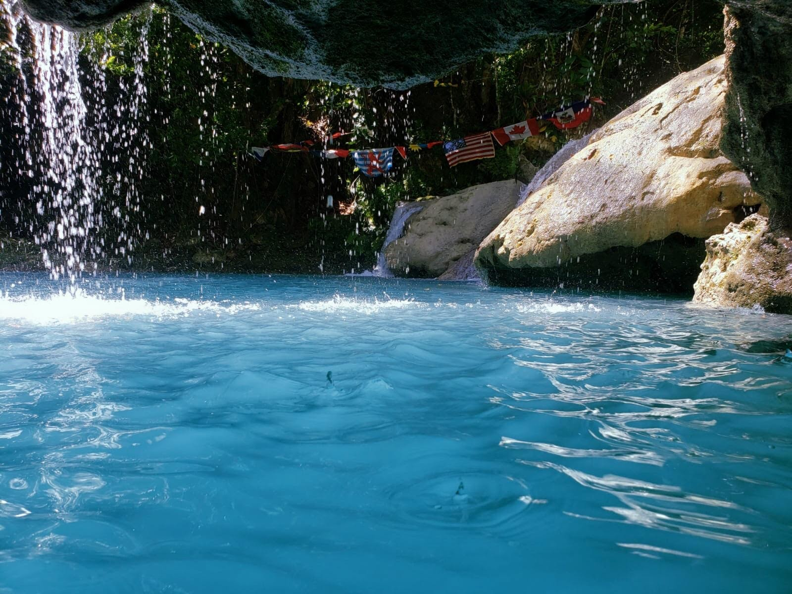
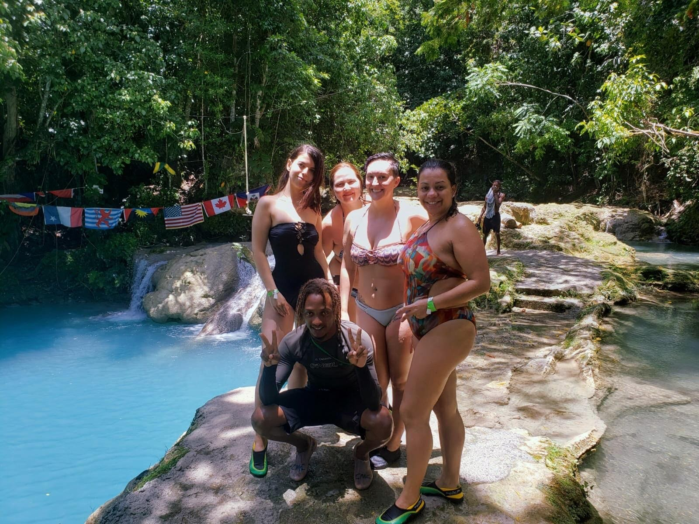
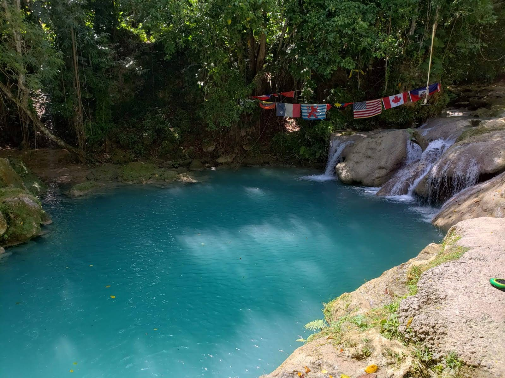

In 2019, I decided to take a solo trip to Jamaica. I decided to use Couchsurfing for a week. I was lucky that I found an amazing host who helped me a lot in Kingston. Then I took a bus to visit to beautiful city Ocho Rios. It is 2 hours from Kingston.
Jamaica is land of wood and water, waterfalls, rivers, mountains and more. I explored all that the Ocho Rios region had to offer, each time more and more spiritually connected to a place I had never visited before. Ocho Rios is Spanish name, which translates to “Eight Rivers.”
The local people I met through CouchSurfing helped me a lot during my trip. They took care of my stuff when I visit Ocho Rios for few days. They showed me places to exchange my money, to eat best ice-cream in Jamaica, to take a bus to visit Bob Marley's museum. I did not have internet during my trip. So they made my trip safe and enjoyable.
Jamaican locals are very friendly. They are always ready to help to make your vacation unforgettable. They are proud of their culture. I made some friends from there and we still talk. I never forget my Jamaica trip and looking forward to visit my friends over there.